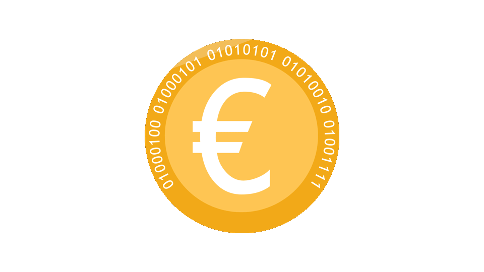

Today we are introducing DEUR, an ERC20 token that lets you earn interest on Dai without requiring it to be locked in the Dai Savings Rate. It can be transferred freely and is always redeemable for an ever growing amount of Dai. Interact with the DEUR contract at digitaleuro.
DEUR lives on the Ethereum Kovan at address 0x36d23b7237fbcF128cDB9091960405216793c5B7.

Get ready for dank, the euro de-banked...
With the launch of multi-collateral Dai, Dai holders can earn risk-free interest on their coins using the Dai Savings Contract, also known as the Pot. The interest is funded out of the stability fees paid by CDP users, and is 2% per year at the time of writing. Even though Dai deposited in the savings contract remains instantly redeemable, interest accruing Dai cannot be directly transferred, or used in other dapps. DEUR solves this by essentially "unlocking" your Dai savings balance, making it transferable, fungible, and ready for further DeFi integrations.
When you convert your Dai to DEUR, you receive a corresponding balance in the DEUR contract. While your DEUR balance remains constant, its corresponding Dai value grows with the Dai Savings Rate. You can think of it as Dai brewing in the DEUR contract. At any point in time you can redeem your Dai along with additional interest, or continue to use the DEUR token directly.
Besides the standard ERC20 functions for transferring DEUR, we want to highlight some additional features of the contract. For more information about the DEUR.sol contract, check out the README.
A Dai user can convert their Dai into DEUR at any point, by calling join. Likewise, they can convert their DEUR into Dai at any point, by calling exit.
With the amount of Dai redeemable for one DEUR constantly growing, the contract offers a few helper functions that operate on DEUR balances in terms of their underlying Dai value.
For example, with the method move(address sender, address receiver, uint value), the sender will transfer just enough DEUR to ensure that the receiver gets an amount of DEUR worth value Dai (the exact amount of DEUR transferred is determined when the transaction is included in a block).
Similarly, the draw function lets users withdraw Dai by specify the amount of Dai they wish to redeem.
Paying gas for transactions that primarily deal with tokens creates unnecessary friction and positions tokens as second-class citizens in the Ethereum ecosystem. While there are many ways of dealing with this problem, both the DEUR and the Dai contract provide a particularly simple and general solution by allowing approvals to be done with a signed message (known as a permit) in the ERC20 directly.
While designing the dai.sol token contract, we experimented with various ways of performing token operations using signatures, until we realized that the only operation that had to be added to the contract directly was permit.
By allowing users to give allowance to arbitrary addresses by signing a permit, we allow abstract gasless operations without committing to a particular way of doing transfer-by-signature, trade-by-signature, or any other token interaction. We achieve full generality by just adding one function to the ERC20 standard. In fact, one of the reasons we felt compelled to write the DEUR contract was because we wanted Savings Dai deposits to have this feature.
Note that the interface at digitaleuro does not yet support gasless transfers, but we are working on a something that demonstrates the full power of the permit pattern. Stay tuned for updates!
Although we believe it to be straightforward enough to not contain any surprises, remember that on the blockchain, you are responsible for your own actions.
The contract source code can be found at github.com/ninonomad/DigitalEuro. The source code for digital euro is at github.com/ninonomad/DigitalEuro/app/chui.